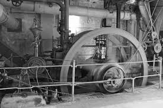

Antes das máquinas
Antes da Revolução Industrial, a maior parte da produção têxtil era feita em casa ou em pequenas oficinas. A fiação era realizada com a roca de fiar e a tecelagem com teares manuais. O trabalho era lento, cansativo e o resultado final dependia da força e da habilidade de cada pessoa.
Invenções na indústria têxtil
Ao longo do século XVIII surgiram várias máquinas que transformaram a produção de fios e tecidos. Entre as mais importantes destacam-se:
Máquinas de fiação
As novas máquinas permitiram fiar vários fios ao mesmo tempo e com melhor qualidade. Estas invenções substituíram progressivamente a fiação manual feita em casa, levando o trabalho para as fábricas.
Organização fabril
Empresários como Richard Arkwright foram fundamentais na criação de fábricas têxteis bem organizadas, com divisão de tarefas e uso intensivo de máquinas. A fábrica passou a ser o centro da produção, reunindo muitos trabalhadores no mesmo espaço.
Máquina a vapor e novas energias
A introdução da máquina a vapor foi um passo decisivo. Deixou-se de depender apenas da força da água, humana ou animal. As máquinas a vapor passaram a ser usadas na indústria têxtil e nos transportes, como comboios e barcos.
A utilização do carvão como fonte de energia permitiu construir máquinas mais poderosas. A Iron Bridge, considerada a primeira ponte de ferro, é um símbolo da nova era dos metais e da energia a carvão.
Segunda Revolução Industrial
Entre o século XIX e o início do século XX, a chamada Segunda Revolução Industrial trouxe novas tecnologias, como os motores de combustão e a eletricidade. Estas inovações aumentaram ainda mais a capacidade de produção e permitiram o aparecimento de novas indústrias.
Máquina a vapor
